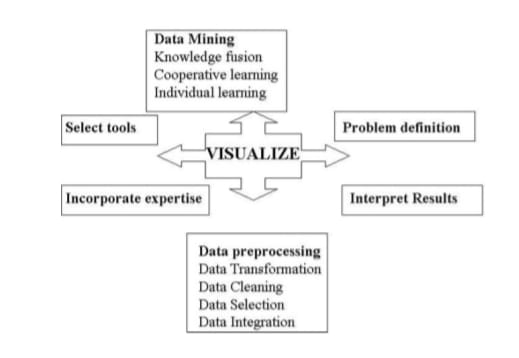
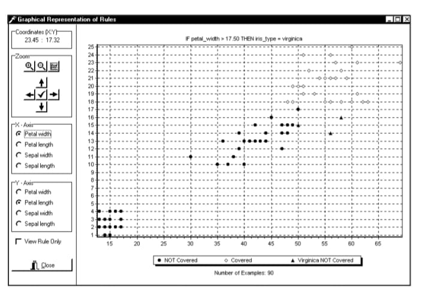
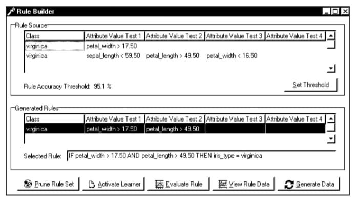

Data mining concerns the discovery and extraction of knowledge chunks from large data repositories. In a cooperative datamining environment, more than one data mining tool collaborates during the knowledge discovery process. This chapter describes a data mining approach used to visualize the cooperative data mining process. According to this approach, visual data mining consists of both data and knowledge visualization. First, the data are visualized during both data preprocessing and data mining. In this way, the quality of the data is assessed and improved throughout the knowledge discovery process. Second, the knowledge, as discovered by the individual learners, is assessed and modified through the interactive visualization of the cooperative data mining process and its results. The knowledge obtained from the human domain expert also forms part of the process. Finally, the use of virtual reality-based visualization is proposed as a new method to model both the data and its descriptors.
The current explosion of data and information, mainly caused by the extensive use of the Internet and its related technologies, e-commerce and e-business, has increased the urgent need for the development of techniques for intelligent data analysis. Data mining, which concerns the discovery and extraction of knowledge chunks from large data repositories, is aimed at addressing this need.
However, there are a number of factors that militate against the widespread adoption and use of this existing new technology in business. First, individual data mining tools frequently fail to discover large portions of the knowledge embedded in large data repositories. This is mainly due to the choice of statistical measures used by the individual tools. A number of data mining researchers and practitioners are, therefore, currently investigating systems that combine two or more diverse data mining tools. In particular, the combination of techniques that share their individual knowledge with one another is being investigated, leading to the fusion of information representing different viewpoints.
Second, the results of many data mining techniques are often difficult to understand. For example, a data mining effort concerning the evaluation of a census data repository produced 270 pages of rules (Pretorius, 2001). The visual representation of the knowledge embedded in such rules will help to heighten the comprehensibility of the results. The visualization of the data itself, as well as the data mining process, should go a long way towards increasing the user’s understanding of and faith in the data mining process. That is, data and information visualization provides users with the ability to obtain new insights into the knowledge, as discovered from large repositories. Human beings look for novel features, patterns, trends, outliers and relationships in data (Han & Kamber, 2001). Through visualizing the data and the concept descriptions obtained (e.g., in the form of rules), a qualitative overview of large and complex data sets can be obtained. In addition, data and rule visualization can assist in identifying regions of interest and appropriate parameters for more focused quantitative analysis (Thearling, Becker, DeCoste, Mawby, Pilote & Sommerfield,2002). The user can thus get a “rough feeling” of the quality of the data, in terms of its correctness, adequacy, completeness, relevance, etc. The use of data and rule visualization thus greatly expands the range of models that can be understood by the user, thereby easing the so-called “accuracy versus understandability” tradeoff (Thearling et al., 1998).
Visual data mining is currently an active area of research. Examples of related commercial data mining packages include the DBMiner data mining system, See5 which forms part of the RuleQuest suite of data mining tools, Clementine developed by Integral Solutions Ltd (ISL), Enterprise Miner developed by SAS Institute, Intelligent Miner as produced by IBM, and various other tools (Han & Kamber, 2001). Neural network tools such as NeuroSolutions and SNNS and Bayesian network tools such as Hugin, TETRAD, and Bayesware Discoverer, also incorporate extensive visualization facilities. Examples of related research projects and visualization approaches include MLC++, WEKA, AlgorithmMatrix, C4.5/See5 and CN2, amongst others (Clark & Niblett, 1989; Fayyad, Grinstein, & Wierse, 2001; Han & Kamber, 2001; Mitchell, 1997; Quinlan, 1994) Interested readers are referred to Fayyad, Grinstein, & Wierse (2001), which provides a detailed discussion of the current state of the art.
This paper describes the ViziMine data mining tool used to visualize the cooperative data mining process. The aim of the ViziMine tool is twofold: First, the knowledge, as discovered by the individual tools, is visualized throughout the data mining process and presented in the form of comprehensible rules; this aspect includes visualization of the results of data mining as well as the cooperative learning process. Second, the data are visualized prior to and during cooperative data mining. In this way, the quality of the data can be assessed throughout the knowledge discovery process, which includes data preprocessing, data mining, and reporting. During data mining, the visualization of data as covered by individual rules shows the portion of the data covered. The visual data mining process is interactive in that humans are able to adapt the results and data during mining. In addition, this chapter shows how virtual reality can be used to visualize the data and its descriptors.
The chapter is organized as follows: The next section introduces the cooperative inductive learning team (CILT) data mining system in which two or more data mining tools co-exist. An overview of current trends in visual data mining follows. The next section discusses the ViziMine system, which incorporates visual data mining components into the CILT system. Then we introduce the use of three-dimensional visualization, virtual reality-based visualization and multimedia data mining, which may be used to visualize the data used for data mining. Conclusions are presented in the last section of the chapter.
Data mining concerns the automated discovery of hidden patterns and relationships that may not always be obvious. A number of data mining tools exist, including decision trees, rule induction programs and neural networks (Han & Kamber, 2001). Each of these tools applies a specific algorithm to the data in order to build a model based on the statistically significant relationships found in the data.
A number of data mining practitioners have found that, when supplied with the same data repository, different data mining tools produce diverse results. This fact is due to the so-called inductive bias that each algorithm uses when constructing the model (Mitchell, 1997). That is, each data mining tool uses a different learning style (based on one of a variety of different statistical measures) and criteria when building its model. The purpose of combining the results of diverse data mining tools, through the fusion thereof, is to produce high quality results. Therefore, the development of a hybrid multi-strategy learning system that incorporates more than one learning style is currently an active area of research (Honavar, 1995; Lin & Hendler, 1995; Sun, 1995). In this multi-strategy learning approach, the strengths of each technique are amplified, and the weaknesses are ameliorated.
In the CILT system, two or more diverse data mining techniques are combined into a multi-strategy learning system (Viktor, 1999). The system currently includes three different data mining tools with different knowledge representations. The C4.5 tool constructs a decision tree using the information gain ratio criteria (Quinlan, 1994). This tree is pruned to produce a set of rules. The CN2 method induces rules from examples using the Laplace error estimate (Clark & Niblett, 1989). Third, the ANNSER learner
creates rules from a trained neural network (Viktor, Engelbrecht, & Cloete, 1998). In addition, the rules of the domain expert are included through a personal assistant (PA) learner, which contains a knowledge base constructed after interviews with one or more domain experts (Viktor, 1999). That is, the user plays an active role in the data mining process, and is able to make and implement decisions that will affect its outcome (Hinke & Newman, 2001).
In the CILT system, the individual results are fused into one through a three-phase process, as follows (Viktor, 1999; Viktor, le Roux, & Paquet, 2001):
Phase 1: Individual learning. First, each individual data mining tool (or learner) uses a training set to form an initial representation of the problem at hand. In addition, the results of the user, a domain expert, are modeled as part of the system (Viktor, 1999). Each individual component’s knowledge is stored in a separate knowledge base, in the form of disjunctive normal form (DNF) rules.
Phase 2: Cooperative learning. During phase 2, the individual data mining tools share their knowledge with one another. A rule accuracy threshold is used to distinguish between low- and high-quality rules. Cooperative learning proceeds in four steps as follows (Viktor, le Roux, & Paquet, 2001):
1) each data mining tool queries the knowledge bases of the others to obtain the high-quality rules that it may have missed. These rules are compared with the rules contained in its rule set. In this way, a NewRule list of relevant rules is produced
2) the NewRule list is compiled by identifying the following relationships between the rules, where R1 denotes a high-quality rule contained in the tool’s rule set and R2 denotes a high-quality rule created by another data mining tool.
• Similarities. Two rules, R1 and R2, are similar if two conditions hold: the training examples covered by rule R1 are a subset of those covered by R2; andthe rules contain the same attributes with similar values. For example, the attribute-value test (petal-width > 49.0) is similar to the test (petal-width >49.5). If R1 and R2 are similar, it implies that the learner has already acquired the knowledge as contained in rule R2 and that R2 should not be added to the NewRule list.
• Subsumption. A rule R2 subsumes another Rl if and only if they describe the same concept and the attribute-value tests of R2 form a subset of that of rule Rl. In other words, rule R2 is more general than R1. If R2 subsumes rule Rl, it is placed on the NewRule list.
3) the rule combination procedure is executed. Here, the rules as contained in the NewRule list are used to form new rules, as follows. The attribute-value tests of the rules as contained in the NewRule list are combined with the attribute-value tests of the rules in the tools rule set to form a new set of rules. Each of these new rules is evaluated against the test set. The new high-quality rules, which are dissimilar to, do not overlap with, and are not subsumed by existing rules, are retained on the NewRule list. These rules act as input to the data generation step.
4) the data generator uses each of the rules in the NewRule list to generate a new set of training instances. The newly generated training instances are added to the original training set, and the learner reiterates the individual learning phase. In this way, a new training set that is biased towards the particular rule is generated. This process is constrained by ensuring that distribution of the data as contained in the original training set is maintained. Interested readers are referred to Viktor (1999) for a detailed description of this process.
Steps 1 to 4 are reiterated until no new rules can be generated. Lastly, redundant rules are pruned using a reduced error pruning algorithm.
Phase 3: Knowledge fusion. Finally, the resulting knowledge, as contained in the individual knowledge bases, is fused into one. Again, redundant rules are pruned and a fused knowledge base that reflects the results of multi-strategy learning is created.
Note that a detailed description of the cooperative learning approach falls beyond the scope of this paper. Interested readers are referred to Viktor (1999) for a description thereof. This chapter concerns the visual representation of the cooperative data mining process and results, as well as the data itself, using visual data mining techniques, as discussed next.
Data mining techniques, as discussed above, construct a model of the data through repetitive calculation to find statistically significant relationships within the data. However, the human visual perception system can detect patterns within the data that are unknown to a data mining tool (Johnson-Laird, 1993). The combination of the various strengths of the human visual system and data mining tools may subsequently lead to the discovery of novel insights and the improvement of the human’s perspective of the problem at hand.
Data mining extracts information from a data repository of which the user may be unaware. Useful relationships between variables that are non-intuitive are the jewels that data mining hopes to locate. The aim of visual data mining techniques is thus to discover and extract implicit, useful knowledge from large data sets using data and/or knowledge visualization techniques. Visual data mining harnesses the power of the human vision system, making it an effective tool to comprehend data distribution, patterns, clusters, and outliers in data (Han & Kamber, 2001).
Visual data mining integrates data visualization and data mining and is thus closely related to computer graphics, multimedia systems, human computer interfaces, pattern recognition, and high performance computing. Since there are usually many ways to graphically represent a model, the type of visualizations used should be chosen to maximize their value to the user (Johnson-Laird, 1993). This requirement implies that we understand the user’s needs and design the visualization with the end user in mind.
Note that, in order to ensure the success of visualization, the visual data mining process should be interactive. In interactive visual data mining, visualization tools can be used to help users make smart data mining decisions (Docherty & Beck, 2001; Han & Kamber, 2001). Here, the data distribution in a set of attributes is displayed using color sectors or columns, giving the user the ability to visually understand the data and therefore allowing him or her to be interactively part of the mining process. In the CILT environment, the user participates (through the PA learner) in the cooperative process and is therefore able to validate the knowledge, as well as add his personal knowledge to the process.
The following observation is noteworthy. Visual data mining concerns both visualizing the data, and visualizing the results of data mining and the data mining process itself. In a cooperative data mining environment, as introduced in the last section, result visualization includes the interactive visualization of the results of multiple data mining techniques and the cooperation processes. Data visualization is important not only during data mining, but also during data preprocessing, as discussed next.
Data preprocessing is one of the most important aspects of any data mining exercise. According to Adriaans and Zantinge (1996), data preprocessing consumes 80% of the time of a typical, real-world data mining effort. Here, the “garbage-in, garbage-out” rule applies. According to a survey conducted by Redman (1996), a typical operational data repository contains 1% to 5% incorrect values. It follows that the poor quality of data may lead to nonsensical data mining results, which will subsequently have to be discarded. In addition, the implicit assumption that the data do in fact relate to the case study from which they were drawn and thus reflect the real world is often not tested (Pyle, 1999).
Figure 1 shows the different components of the knowledge discovery process, which includes the selection of appropriate tools, the interpretation of the results, and the actual data mining itself. Data preprocessing concerns the selection, evaluation, cleaning, enrichment, and transformation of the data (Adriaans & Zantinge, 1996; Han & Kamber, 2001; Pyle, 1999). Data preprocessing involves the following aspects:
• Data cleaning is used to ensure that the data are of a high quality and contain no duplicate values. If the data set is large, random samples are obtained and analyzed. The data-cleaning process involves the detection and possible elimination of incorrect and missing values. Such values may have one of a number of causes. These causes include data capturing errors due to missing information, deliberate typing errors, and negligence. Moreover, end users may fraudulently supply misleading information.
Figure 1: Data preprocessing and data mining tasks [Adapted from Docherty & Beck, 2001].
• Data integration. When integrating data, historic data and data referring to dayto- day operations are merged into a uniform format. For example, data from source A may include a “date of recording” field, whereas the data from source B implicitly refer to current operations.
•Data selection involves the collection and selection of appropriate data. Highquality data collection requires care to minimize ambiguity, errors, and randomness in data. The data are collected to cover the widest range of the problem domain.
• Data transformation involves transforming the original data set to the data representations of the individual data mining tools. Neural networks, for example, use numeric-valued attributes, while decision trees usually combine numeric and symbolic representations. Care should be taken to ensure that no information is lost during this coding process.
Data visualization provides a powerful mechanism to aid the user during the important data preprocessing steps (Foong, 2001). Through the visualization of the original data, the user can browse to get a “feel” for the properties of that data. For example, large samples can be visualized and analyzed (Thearling et al., 2001). In particular, visualization can the used for outlier detection, which highlights surprises in the data, that is, data instances that do not comply with the general behavior or model of the data (Han & Kamber, 2001; Pyle, 1999). In addition, the user is aided in selecting the appropriate data through a visual interface. During data transformation, visualizing the data can help the user to ensure the correctness of the transformation. That is, the user may determine whether the two views (original versus transformed) of the data are equivalent. Visualization may also be used to assist users when integrating data sources, assisting them to see relationships within the different formats.
Data mining relies heavily on the training data, and it is important to understand the limitations of the original data repository. Visualizing the data preprocessing steps thus helps the user to place the appropriate amount of trust in the final model (Thearling et al., 2001).
The next section discusses data visualization techniques.
According to Grinstein and Ward (2002), data visualization techniques are classified in respect of three aspects: their focus, i.e., symbolic versus geometric; their stimulus (2D versus 3D); and whether the display is static or dynamic. In addition, data in a data repository can be viewed as different levels of granularity or abstraction, or as different combinations of attributes or dimensions. The data can be presented in various visual formats, including box plots, scatter plots, 3D-cubes, data distribution charts, curves, volume visualization, surfaces, or link graphs, among others (Thearling et al., 2001).
Scatter plots refer to the visualization of data items according to two axes, namely X and Y values. The data are shown as points on this 2-D coordinated plane, with possible extra information on each point, such as a name or a number, or even a color. 3D-cubes are used in relationship diagrams, where the data are compared as totals of different categories. According to Hoffman and Grinstein (2002), the scatter plot is probably the most popular visualization tool, since it can help find clusters, outliers, trends, and correlations. In surface charts, the data points are visualized by drawing a line between them. The area defined by the line, together with the lower portion of the chart, is subsequently filled. Link or line graphs display the relationships between data points through fitting a line connecting them (CAESAR™Project, http://www.sae.org/ technicalcommittees/caesumm.htm; NRC Cleopatra Anthropometric Search Engine, http:/ /www.cleopatra.nrc.ca; Paquet, Robinette & Rioux, 2000). They are normally used for 2D data where the X value is not repeated (Hoffman & Grinstein, 2001).
Note that advanced visualization techniques greatly expand the range of models that can be understood by domain experts, thereby easing the so-called accuracyversus understandability tradeoff (Singhal & Zyda, 1999). However, due to the so-called “curse of dimensionality,” highly accurate models are usually less understandable, and vice versa. In a data mining system, the aim of data visualization is to obtain an initial understanding of the data and the quality thereof. The actual accurate assessment of the data and the discovery of new knowledge are the tasks of the data mining tools. Therefore, the visual display should preferably be highly understandable, possibly at the cost of accuracy.
Three components are essential for understanding a visual model of the data, namely representation, interaction and integration (Singhal et al., 1999):
• Representation refers to the visual form in which the model appears. A high-quality representation displays the model in terms of visual components that are already familiar to the user.
• Interaction refers to the ability to view the model “in action” in real time, which allows the user to play with the model. Examples are “what-if” analysis and forecasting based on the data and the business scenario.
• Integration concerns the ability to display relationships between the model and alternative views of the data, thus providing the user with a holistic view of the data mining process.
A number of “rule of thumb” guidelines have to be kept in mind when developing and evaluating the data visualization techniques, including the following (Tufte, 1990): color should be used with care, and context-sensitive expectations and perceptual limitations should be kept in mind; intuitive mappings should be used as far as possible, keeping in mind non-intuitive mappings may reveal interesting features; the representation should be appealing to the eye, and there should be a balance between simplicity and pleasing color combinations while avoiding excessive texture variations and distracting flashes; and data distortion should be avoided and data should be scaled with care.
The use of one or more of the above-mentioned data visualization techniques thus helps the user to obtain an initial model of the data, in order to detect possible outliers and to obtain an intuitive assessment of the quality of the data used for data mining. The visualization of the data mining process and results is discussed next.
According to Foster and Gee (2002), it is crucial to be aware of what users require for exploring data sets, small and large. The driving force behind visualizing data mining models can be broken down into two key areas, namely, understanding and trust (Singhal et al., 1999; Thearling et al., 2001). Understanding is undoubtedly the most fundamental motivation behind visualization. Understanding means more than just comprehension; it also involves context. If the user can understand what has been discovered in the context of the business issue, he will trust the data and the underlying model and thus put it to use. Visualizing a model also allows a user to discuss and explain the logic behind the model to others. In this way, the overall trust in the model increases and subsequent actions taken as a result are justifiable (Thearling et al., 2001).
According to Gershon and Eick (1995), the art of information visualization can be seen as the combination of three well-defined and understood disciplines, namely, cognitive science, graphic art, and information graphics. A number of important factors have to be kept in mind during process and result visualization, including the following: the visualization approach should provide an easy understanding of the domain knowledge, explore visual parameters, and produce useful outputs; salient features should be encoded graphically; and the interactive process should prove useful to the user.
As stated in a previous section, the CILT learning strategy involves the cooperation of two or more data mining tools. During the cooperative data mining effort, the data mining processes of both the individual and the cooperative learning process are visualized. This type of visualization presents the various processes of data mining. In this way, the user can determine how the data are extracted, from which data repository the data are extracted, as well as how the selected data are cleaned, integrated, preprocessed, and mined. Moreover, it is also indicated which method is selected for data mining, where the results are stored, and how they may be viewed.
The format of knowledge extracted during the mining process depends on the type of data mining task and its complexity. Examples include classification rules, association rules, temporal sequences and casual graphs (Singhal et al., 1999). Visualization of these data mining results involves the presentation of the results or knowledge obtained from data mining in visual forms, such as decision trees, association rules, clusters, outliers, and generalized rules. An example is the Visual Query-Language-Based Control Interface, where the user is allowed to make queries based on visual inputs and to manipulate the visual representations, i.e., the system provides a visual query capability (Multiple Authors,2000). The Silicon Graphics (SGI) MineSet 3.0 toolset, on the other hand, uses connectivity diagrams to visualize decision trees, and simple Bayesian and decision table classifiers (Carter & Hamilton, 1997; Han & Kamber, 2001; Thearling et al., 2001). Other examples include the Evidence Visualizer, which is used to visualize Bayesian classifiers (Becker, Kohavi, & Sommerfield, 2002); the DB-Discover system that uses multi-attribute generalization to summarize data (Carter & Hamilton, 1997; Hilderman, Li, & Hamilton, 2002); and the NASD Regulation Advanced Detection System, which employs decision trees and association rule visualization for surveillance of the NASDAQ stock market (Senator, Goldberg, & Shyr, 2002).
In addition, the model-building process may be visualized. For example, the Angoss decision tree builder gives the user full control over the decision tree building process (http//www.angoss.com). That is, the user is able to suggest splits, prune the tree or add his knowledge through the manual construction of the tree.
Alternatively, visualization of the constructs created by a data mining tool (e.g., rules, decision tree branches, etc.) and the data covered by them may be accomplished through the use of scatter plots and box plots. For example, scatter plots may be used to indicate the points of data covered by a rule in one color and the points not covered by another color. This visualization method allows users to ask simple, intuitive questions interactively (Thearling et al., 2001). That is, the user is able to complete some form of “what-if” analysis. For example, consider a rule IF Temp > 70 THEN Thunder used on a Weather Prediction data repository. The user is subsequently able to see the effect when the rule’s conditions are changed slightly, to IF Temp > 72 THEN Thunder, for instance.
This section provides an overview of current techniques used to visualize the data mining process and its results. The next section discusses the implementation of the ViziMine tool.
As stated inthe previous section, the driving forces behind visual data mining are understanding and trust. ViziMine addresses the comprehensibility and trust issues in two ways: first, by visualizing the data, the cooperative data mining process, and the results of data mining in a meaningful way, and second, by allowing the user to participate in the cooperative data mining process, through manipulation of the data and the rules. In this way, the user is able to interact and participate in the data mining process. Because of the user’s active participation and understanding of and trust in the data, the data mining process and its underlying model should improve. Therefore, the main aim of the ViziMine tool is to illustrate the cooperative data mining process and to provide a tool
that can be used by the domain expert to incorporate his knowledge into the system. This type of visualization attempts to provide a greater understanding of the data and the cooperative data mining process (Docherty & Beck, 2001).
Interaction is an essential part of a data exploration effort. The user should be able to interact with data to discover information hidden in it (Cruz-Neira, Sandin & Defanti, 1993). Manipulation of the data dynamically allows the user to “get a feel” for the dynamics and test whether the data accurately reflect the business environment.
The current implementation of ViziMine provides an option to visualize the data by means of scatter diagrams. This graphical representation is simple enough to be easily understood, while being complete enough to reveal all the information present in the model. Experience shows that, in order to illustrate simple relational data, the problem is to navigate through these visualizationsand to stay focused on the object of interest. As indicated in the previous section, this technique is popular due to its strength when attempting to locate clusters, outliers, trends, and correlations. Scatter plots work well for small data sets that contain a small amount of input features and a few classes. With larger data sets, the use of colors allows the user to gain a good understanding of the data and to detect possible tendencies in the data.
For example, consider the well-known Iris benchmarking data set. The problem concerns the classification of Irises into one of three classes, i.e.,Setosa, Virginica, and
Figure 2: Graphical representation of rules.
Versicolor. The flowers are classified in terms of four inputs, namely, the sepal-width, sepal-length, petal-width, and petal-length. Figure 2 shows how two input values, namely petal-width and petal-length, are plotted in a Cartesian space. The figure illustrates the usefulness of scatter plots for identifying possible clusters of data points. This tool can convey enormous amounts of information in a compact representation. The user is able to view a data set by making a projection along any two input dimensions. The user uses this tool to obtain a general idea of the contents and quality of the data set.
However, from a cooperative learning perspective, the main objective of the data visualization component is to visualize the portion of the data set covered by a particular rule, as described next. For example, Figure 2 depicts how the rule (henceforth referred to as Rule 1)
IF petal-width > 17.50 THEN Iris = Virginica
is visualized by means of a scatter diagram. The diagram depicts the petal-width and petallength input dimensions. The scatter diagram shows the Virginica examples covered by the rule (in yellow), together with those examples that were not covered (in black or red). The diagram indicates that the petal-lengths of most Virginica Irises are larger than 46.50. Note that any two of the inputs can be depicted on the X-axis or Y-axis. This may lead to the identification of new clusters that are not described in the rule. For example, a new cluster identifying a relationship between the sepal-widths and petal-widths of Virginicas may be identified, merely by changing the two inputs displayed. This information may then subsequently be used to form a new rule to be used for further training (Viktor, le Roux, & Paquet, 2001).
As stated previously, the CILT system currently incorporates the results of a number of data mining tools that are used for classification. The ViziMine tool imports the rules (or initial knowledge) produced by each tool as an ASCII file and subsequently represents the rules visually as part of the team. This allows the user to easily understand the rule, and provides an interface between the user and the data mining tool.
The ViziMine tool thus provides the user with a detailed description of the current state of each data mining tool. This interface also allows the user to incorporate his knowledge into the system by participating as a learning team member.
The visualization of, for example, a C4.5 decision tree, provides a user with an initial understanding of the knowledge discovered. However, the ability to drag-and-drop the rules onto the data and see the impact immediately allows the user first to understand the rules, and then to play with various “what-if” analysis techniques. ViziMine allows the user to achieve this by illustrating the rules visually on selected data axes by means of a scatter plot of 2D data graphs. This is made possible by the easily comprehensible interface, where the user can select a rule, either directly from one of the learners, or from the manipulated rules of the domain expert, and then drop it onto the data visualization. The portion of the data covered by the rule is subsequently shown on the data, as illustrated in Figure 2.
The data-items (inputs) of the class that is covered by the rule are displayed in color, while the data points of the complementary classes are displayed using round black dots. For example, in Figure 2, the data-items of Iris types Setosa and Versicolor are shown as round black dots. For the Virginica Irises, the data-items covered by Rule 1 are displayed as diamond-shaped yellow dots. The data-items of Virginicas that are not covered by Rule 1 are indicated through the use of red triangles. This information is used to assess the individual rule’s accuracy and coverage. By interacting in this way, the user can understand the data that underlies a particular rule constructed by the data mining tool. That is, a clearer understanding of the knowledge discovered by the various mining toolsthat coexist in the cooperative learning environment is obtained.
The user is also able to participate in the learning process by manually combining parts of the rules. The Rule Builder models an individual data mining tool’s participation during the cooperative learning phase, as discussed in earlier in the chapter. Note that the learning team operates in one of two modes:
1. In automatic mode, the cooperative learning phase is dynamically reiterated until no new rules can be created. That is, the rule combining, data generation, and rule pruning steps are completed without any feedback from the user. Here, the user acts as a spectator, viewing the data mining tools’ cooperation. This is especially useful when the user wishes to trace the learning process.
2. In manual mode, the user actively participates in the learning process. He monitors and guides the reiteration of new rules and the data generation process. Importantly, the user can promote the cooperation process by removing or adapting rules. In this way, the user guides the learning process by incorporating his domain knowledge into the system.
The Rule Builder interface is shown in Figure 3. The top part of the interface displays the rules as generated by the active learner. The current rule accuracy threshold, which
Figure 3: Rule Builder interface.
is equal to the average rule accuracy, is displayed next. Here one will recall that this value is used to distinguish between high- and low-quality rules. The window also displays the newly generated rules. These rules are generated using the rule combination algorithm described earlier. In this way, the visualization helps the user to easily understand the various rules. For an expert user, the tool also provides an additional function allowing the user to add his own rules to the combined knowledge.
As has been indicated, the three components essential for understanding a visual model are high-quality representation, real-time interaction, and model and data integration. The current implementation of the ViziMine system thus addresses these three requirements through the real-time integration of both data visualization and data mining result visualization into one.
The next section discusses the use of three-dimensional visualization and virtual reality as a powerful tool for visualizing the data during the data preprocessing and mining processes.
Three-dimensional visualization has the potential to show far more information than two-dimensional visualization, while retaining its simplicity. Current and future research efforts will include the ability to model relationships between data in a three-dimensional rule grid. This visualization technique quickly reveals the quantity and relative strength of relationships between elements, helping to focus attention on important data entities and rules. It therefore aids both the data preprocessing and data mining processes.
Note that, although the data set and the data context determine the visualization technique, the size also plays a very important role. Unfortunately, the more data items on the visual graph, the more complex the graph becomes, and thus the user is faced with information overload or the so-called “curse of dimensionality.”
The next section contains general considerations on Virtual Reality (VR) and data mining, but most of the conclusions can be applied to the ViziMine tool as well. The ViziMine tool relies on bidimensional visualization, but the importance of each rule can be better visualized if three-dimensional visualization is utilized.
The curse of dimensionality is not restricted to data mining. This problem can arise in information retrieval, and Bayesian and multivariate analysis, to mention just a few. Many solutions have been designed, including the principal component analysis (or PCA). Under certain conditions, defined formally in Reinsel and Velu (1998), it is possible to drastically reduce the number of dimensions, while keeping most of the knowledge by performing a PCA on the data. The approach can be summarized as follows. The covariance matrix of the data is first computed, and then the corresponding Eigen values and vectors are evaluated. Because the covariance matrix is symmetric, the Eigen values and vectors can be easily calculated with a deterministic algorithm like the Jacobi method.
The amplitude of the Eigen values is representative of the importance of a particular dimension: the greater the value, the higher the importance. The corresponding Eigen vectors provide the basis that spans the subspace. It can be shown that the dimensions corresponding to the smallest Eigen values can be neglected. It can also be proved that the truncated Eigen decomposition is the decomposition that minimizes the quadratic error between the truncated decomposition and the real one.
distribution. Let us suppose that the data are distributed along a regression line. The Eigen vectors corresponding to this distribution are respectively oriented parallel and perpendicularly to the regression line; the biggest Eigen value corresponds to the Eigen vector oriented parallel to the regression line while the smallest Eigen value corresponds to the Eigen vector normal to the regression line. This particular case shows a fundamental limitation of the PCA method; i.e., in order to reduce the number of dimensions, the data must be correlated in the sense that a linear relationship must exist between them. Even if such a correlation is common in practice, that constraint constitutes an important limitation.
Many researchers have tried to overcome the limitation inherent in the linear relation by working on a generalization of the previous algorithm. A case of particular interest is the piecewise linear relation, which is an immediate generalization of the previous case. Instead of assuming a global linear relation, it is assumed that the domain can be divided into small domains to which a linear relationship applies. That means that the dimensions reduction is performed on a local basis and not on a global basis as in the previous case. More details about this method can be found in Chakrabarti and Menrotra (2000).
In addition to PCA, other methods like neural networks, clustorization, and latent semantic indexing can be utilized for dimension reduction. Clustorization allows representation of the data by a few archetypes corresponding to representative or typical data within the clusters. Neural networks reduce the data set to a limited number of classes. The classes can be determined in advance, as it is the case for a multilayer perceptron and radial basis neural networks, or determined by the network itself, as in the self-organizing Kohonen map.
Even if the number of dimensions can be reduced, it is well known that the number of remaining dimensions is much higher than three. Under these circumstances, it is legitimate to ask whether or not there is a clear advantage to increasing the number of dimensions from two to three. Doing so has many advantages. It is well known that complicated data sets are very difficult to visualize in two dimensions. There are many reasons for that. Let us look at three of them: the amount of information that can be displayed, the navigation through the data set, and the way data can be represented.
Let us suppose that N information elements can be displayed in each dimension. If the data are displayed in two dimensions with a volumetric display, it is theoretically possible to display up to N2 information elements. If three dimensions are utilized, it is then possible to display up to N3 information elements simultaneously. In practice, the
number of displayed information elements is much lower, but this simple example illustrates the fact that an increase in the number of dimensions dramatically increases the bandwidth of the display system.
In visual data mining (Fayyad, Grinstein, & Wierse, 2001), the way data are looked at or the point of view from which they are considered is very important. A pattern that can be evident from a certain point of view might be very difficult to see from a different point of view. Consequently, it is very important that the analyst is able to navigate through the data in order to determine the best localization for his analysis. It is well known that bidimensional representations cannot take into account more that one point of view. Of course, it is always possible to reprocess the data in order to show them from a different point of view, but in practice that is not convenient. First, it can take a lot of time to reprocess the data. Such delays can greatly hamper the analysis process. Second, it is very difficult to determine the right point of view if one cannot navigate through the data in a non-stepwise manner
The above-mentioned problems can be overcome by using an additional dimension. Three-dimensional data can be viewed from any point of view just by navigating through them. If the system is properly designed, the navigation can be done in realtime. The determination of the right point of view is much easier because the user can walk or fly though the data and look at them from any suitable direction. These systems can be implemented using a VRML browser, a virtual reality environment, or any suitable graphical system.
In order to represent the data, new multimedia alternatives are becoming available, including the X3D and MPEG-4 standards. X3D allows the analyst to define a graphical library adapted to the class of problem he is trying to solve. Not only is it possible to create templates, but also to define a grammar for a specific class of problems. Once the grammar has been defined, it can be reused transparently with various data sets. More details about X3D can be found at the Web3D Consortium web site (http:// www.web3d.com).
MPEG-4 is the first, if not the only, real multimedia format. It can transparently handle sound, images, videos, and 3-D objects, as well as events, synchronization, and scripting languages. MPEG-4 is specially adapted to represent very complex multimedia data sets and to facilitate the interaction between those data sets and the analysts. The data mining task could be further simplified by using MPEG-7. MPEG-7 is a multimedia description standard that can describe the content of any multimedia object. That means that MPEG-7 can provide the analyst with additional information. For a video, this information could be the duration, the title, and a trailer. Even if the MPEG-4 and MPEG- 7 standards look very promising, it is too early to draw a conclusion about their usefulness in data mining. More details about MPEG-4 and MPEG-7 can be found at http:/ /mpeg.telecomitalialab.com.
ments. In three dimensions, both two- and three-dimensional graphical elements can be utilized. These elements are much more numerous and diversified in three dimensions than in two. Furthermore, three-dimensional representations can be either volumetric or surface-based depending on whether the internal structure is of interest or not. A surface-based representation only takes into account the outer appearance or the shell of the object, while a volumetric approach assigns a value to each volume element. The latter approach is quite common in biomedical imagery like CAT scanning.
Many techniques are available to visualize data in three dimensions (Harris, 2000). Let us review a few of them. It is very common to represent data by glyphs (Hoffman & Grinstein, 2001; Fayyad, Grinstein, & Wierse, 2001). A glyph can be defined as a threedimensional object suitable for representing data or subsets of data. The object is chosen in order to facilitate both the visualization and the data mining process. The glyph must be self-explanatory and unambiguous. Glyphs can have various attributes like their color and scale. Even if most glyphs are rigid objects, non-rigid and articulated objects can be used as well. It is then possible to use the deformation and the pose of the glyph to represent some specific behavior of the data set. Furthermore, glyphs can be animated in order to model some dynamic process. A scene is defined as the set of all glyphs and their surroundings, as explained by the following example.
Assume that the original data come from a furniture store. The data concern a data mining effort initiated by the Orders Department. The aim of data mining is to determine the purchase patterns of customers indicating the popularity of items, e.g., of sofas. In this example, each sold category is represented by a glyph in the virtual scene. The color of the glyph represents the warehouse stock status: a warm color means that the item is a back order, a cold color means that the item is being overproduced, and a gray color corresponds to a normal inventory. The relative sizes indicate the current sales status. For example, a small sofa would indicate that the sales are too low, while a big sofa would indicate that the sofas are selling well on the market. If the sofa is much bigger than anything else, it means that the sales are unbalanced. The position of the glyphs in the virtual scene is related to the localization of the corresponding items in the store. From an analysis of the localization, it is possible to determine the disposition that maximizes the sales. In addition to the geometrical content, aural attributes can be added to the scene as well (Begault, 1994). These attributes can be utilized to attract the analyst’s attention to some particular characteristics of the data or to bias the data mining process in a certain way. The sounds can signal points of interest or can be voice recordings of a previous analysis. When used in a moderate way, aural attributes do not interfere with the visual content and can provide additional information about the data. The overall efficiency of aural attributes can be enhanced if they are spatialized, i.e., they can only be heard at certain locations and within a certain spatial range. The scene can be illuminated in various ways. Depending on the angle of incidence, the number of luminaires, and their nature, it is possible to enhance or hide various aspects of the data. If many analysts are simultaneously working on the data set, the lighting can be used to help them to better visualize their mutual understanding of the data by enhancing features or patterns related to their respective understanding of the situation. The
lighting does not need to be static; the dynamic nature of the data can be taken into account as well. A time-dependent lighting can facilitate understanding the evolution of data over time. The interaction of the lighting with the scene can be used to model the interaction of the data with an external agent.
Glyphs can be shown at various levels of detail (LOD). The LOD can be adjusted to provide the analyst with the right amount of information for the task he has to perform. The LOD can be related to the number of triangles used to represent the glyph in a surfacebased representation or by the resolution of the basic volumetric element in a volumetric representation. A low LOD glyph can be seen as a sketch of the situation while a high LOD glyph corresponds to a more detail representation. It is important to point out that each glyph can have a different LOD in the scene.
The LOD can be increased by either adding more details to the structure of the glyph or by repeating the structure of the glyph when a scaling operation is performed; this is equivalent to using a fractal representation for the glyph. A fractal is an object that can repeat itself at different scales or LOD. The object does not necessarily repeat itself in an identical fashion at each scale; random variations are allowed. The fractal behavior is usually valid only on a certain range of scales. Fractal structures are very useful for representing data that have a high degree of auto-similarity at various levels, like organizational data. By varying the number of levels on which the symmetry is valid, it is possible to determine whether or not it is suitable to repeat a structure or a behavior within an organization.
Not only can three-dimensional representations be used to model data efficiently, but they can also be utilized to model interrelations. The fractal structure described above is an interesting example. It is also possible to utilize complicated graphs like the octree and the cone diagram, to mention but a few. Although these graphs can be very useful, they must be utilized with great care because they can rapidly become difficult to visualize. A possible solution to this problem is to transpose the data into another context. The basic idea is to map the data space, which can be very abstract, to a wellknown problem that can be easily visualized and understood. That kind of paradigm is called a metaphor. The metaphor maps the problem space into a space familiar to the analyst called the “metaphoric space.” There must be a one-to-one correspondence between the real space and the metaphoric space. The reason for this is that if a pattern is found in the metaphoric space, the transformation must be invertible in order to find the corresponding pattern in the real space.
Attempts have been made to use more than three geometric dimensions at once by continuously showing subsets of the higher dimension space;dimensions are sampled at random and displayed to the analyst at regular time intervals. Even though these systems are of great interest from a research point of view, they have proved to be very difficult to use, because the computing load is very high and can only be handled by highend computers, and because it is very difficult for the analyst to make sense of all the subsets that are shown to him. It is clear that classical visualization paradigms are not suited to those systems. However, computers that are more powerful and new visualization paradigms should open the door to multidimensional data mining.
Three-dimensional visualization can be made more efficient by the use of virtual reality (VR) (Hoffman & Grinstein, 2001). It is commonly admitted that a virtual environment (VE) is a three-dimensional environment characterized by the fact that it is immersive, interactive, illustrative, and intuitive.
The fact that the environment is immersive is of great importance in data mining. In an image, one looks at the data from outside, while in a VR environment the user is part of the data world. This means that the user can utilize all his senses in order to navigate and understand the data. This also implies that the representation is more intuitive. VR is particularly well adapted to representing the scale and the topology of various sets of data. That becomes even more evident when stereo visualization is utilized. Stereo vision allows the analyst to have real depth perception. This depth perception is important to estimate the relative distances and scales between the glyphs. Such estimation can be difficult without stereo vision if the scene does not correspond to the paradigms our brain is used to processing. In certain cases, the depth perception can be enhanced by the use of metaphors.
If more than three dimensions are required, more dimensions can be added locally by inserting an image or a graph at a specific position in the VR world. Dimensions can also be added by modifying the lighting conditions. It is also possible to add more dimensions by using feedback or haptic devices (Burdea, 1996). These devices can be very useful if the user interacts with the data. The force applied by the haptic device to the user simulates the difficulty of performing a given operation on the data. Color and texture can be used as well to represent additional dimensions or to enhance specific features within the VR world.
Collaborative Virtual Environments (CVEs ) (Churchill, Snowdon & Munro, 2001; Singhal et al., 1999) can be considered as a major breakthrough in data mining. By analogy, they can be considered the equivalent of collaborative agents in visualization. Traditionally, one or more analysts perform visualization at a unique site. This operational model does not reflect the fact that many enterprises are distributed worldwide and so are their operations, data, and specialists. It is consequently impossible for those enterprises to centralize all their data mining operations in a single center. Not only must they collaborate on the data mining process, which can be carried out automatically to a certain extent by distributed and collaborative agents, but they must also collaborate on visualization and on the visual data mining aspect.
CVE allows these enterprises to work on data originating from various sources and to analyze them simultaneously from various physical locations. Each location has its own VE. For most CVEs, the VEs do not need to be of the same type; one VE could be a workstation, another a tiled wall display (Cruz-Neira, Sandin & Defanti, 2000), and the third one could be a surround screen environment like a CAVE™(Cruz-Neira et al., 1993). The VEs can exchange data, video, and sound. All data can be accessed and manipulated from all VEs simultaneously. If needed, a monitor can ensure that the VEs do not apply conflicting manipulations to the data.
Note that it is important to choose the VE that is best adapted to the data and their analysis. Graphical workstations are perfect for simple data sets analyzed by a few specialists. Tiled wall displays are made up of a set of flat panels with liquid crystal displays (LCDs) that are carefully aligned on a flat or a curved surface. They usually
cover a very large area and consequently allow many specialists to work on the same data simultaneously. Surround screen environments are usually made up of many surfaces. Each surface is either a titled wall display or a projection surface. Surround screen environments are used to achieve an optimum level of immersion. For many technical reasons, the projector is based on digital micromirror device technology or DMD (Digital Light Processing, http://www.dlp.com). Stereo vision can be achieved by alternatively projecting the left-eye and right-eye views and by synchronizing the rendering with shutter glasses. Stereo vision can also be achieved by simultaneously projecting polarized right-eye and left-eye views on the screen. In that case, passive polarized glasses replace the active synchronized glasses. It should be noted that a metallic screen must be utilized to preserve the polarization. The polarization system has a refreshing rate that is twice the refreshing rate of the corresponding shutter system. A high refreshing rate is suitable in order to avoid tiredness and VR-sickness. Since data mining usually involves long sessions, the polarization-based system is the most suitable.
Over the past decades, data mining has mostly been applied to alphanumerical data. Data mining is also applied to multimedia data, but most of the time the data mining process is restricted to the associated metadata and to the surrounding text. Multimedia objects contain a huge amount of information. Their description is directly related to their content and for that reason they are called “content-based.” Most of the time, the descriptor is a feature vector that contains a set of abstract data representing the characteristics of interest.
Multimedia data mining is currently in its infancy. For that reason, the discussion will be limited to the description of the data mining of three-dimensional objects in the context of the CAESAR™Project and of the National Research Council of Canada’s – (NRC) Cleopatra multimedia data mining system.
The CAESAR™Project is an international project that involves the USA, Canada, Italy, and the Netherlands. The purpose of the project is to collect statistical and anthropometrical data about the worldwide population. The anthropometrical data are made up of various measurements performed on thousands of individuals, as well as of three-dimensional scans of their bodies. The statistical data contain information about their perceptions, consumer habits, and lifestyle. The CAESAR™database is intended for utilization mainly by the apparel and the transportation industries. The apparel industry needs body archetypes to design clothes that fit the population, and the transportation industry needs archetypes to design car interiors and seats in planes that are suitable for its clients.
In this project, clustering and filtering is used as a method to group individuals within the population into clusters (Han & Kamber, 2001). That is, we use the clustering data mining technique to find similar individuals within the population, based on an archetype. An archetype is defined as a typical individual within a cluster. It should be noted that an archetype is usually not the center of the cluster; it is an individual that is statistically representative of the behavior of the population within the cluster. Note that the archetype must be a real individual belonging to the database. Average and
median individuals usually lead to archetypes that do not exist at all in the general population.
The clustering method is based on the description of the individuals as contained in the Cleopatra system designed by the NRC. Cleopatra analyzes the body scans as contained in the CAESAR™database and subsequently generates a shape descriptor for each one of them. The descriptor is an abstract and compact representation of the human body. Cleopatra then loads the shape descriptors, and the anthropometrical and statistical data into an Oracle8i™database. An object-oriented-relational representation has been adopted for the data. The Cleopatra Search Engine can query the database by human shape, anthropometrical data, and statistical data.
Given a subject and some of his characteristics, like weight, the Cleopatra Search Engine retrieves similar bodies from the database. The alphanumerical data act as a filter; bodies that meet the filter requirements are accepted, while bodies that do not meet the requirements are rejected. Once the filtering process is completed, the search engine retrieves similar bodies based on their 3-D shape. The outcome of the retrieval operation is a cluster corresponding to the proposed subject. By reiterating the process, it is possible to validate the cluster and to find the right archetype. More details can be found in Paquet, Robinette, and Rioux (2000) and The Caesar™Project (http://www.sae.org/ technicalcommittees/caesumm.htm), and a demonstration of the system can be found at the NRC’s web site(http://www.cleopatra.nrc.ca). Once the cluster has been characterized, it can be visualized by using a VE; the archetype occupies the center of the visual field while the various individuals belonging to the cluster are distributed around the archetypes according to their similarity. In order not to bias the visualization process, the individuals can be subjected to a random motion on spherical trajectory of constant radius, the radius being related to the degree of similarity.
The ViziMine tool provides a comprehensive visualization tool to support the cooperative data mining process. This tool gives the user the ability to visualize the data and the data covered by the rules in various ways in order to understand it, and to gain new insight into the data mining process. The ability to visualize the results of the data mining effort, both during individual and cooperative learning, helps the user to understand and trust the knowledge embedded in it. The tool thus gives the user the ability to get an intuitive “feel” for the data and the rules created. This ability can be fruitfully used in many business areas, for example, for fraud detection, diagnosis in medical domains, and credit screening, among others.
Recall that the user is modeled as one of the participants in the CILT cooperative data mining environment, as visualized by the ViziMine tool. The visualization process is chronological, following the data mining life cycle, and is thus intuitive, easy to use, and understandable (Multiple Authors, 2000). ViziMine provides a mechanism to enable the user to monitor the data mining process, its inputs, and results, and to interact with the cooperative data mining process and influence the decisions being made. In this way, the powerful human visual system is used to increase the user’s understanding of and trust in the data mining effort.
Future development of the ViziMine tool will include the study of a suitable visualization technique for a variety of data set sizes and types, as well as an investigation into the scalability of our approach. This will allow the tool to be compatible with additional real-world data mining problems. The use of our approach for Web mining, with the subsequent application thereof for e-commerce and e-business, should be further investigated. Recall that current implementation of the ViziMine tool incorporates the C4.5, CN2, and ANNSER data mining tools. Other data mining tools may be incorporated through the transformation of their outputs to DNF rule format. This aspect will be further investigated.
Virtual reality and virtual collaborative environments are opening up challenging new avenues for data mining. There is a wealth of multimedia information waiting to be data mined. In the past, due to a lack of proper content-based description, this information was neglected. With the recent advent of a wide variety of content-based descriptors and the MPEG-7 standard to handle them, the fundamental framework is now in place to undertake this task. Virtual reality is perfectly adapted to manipulate and visualize both data and descriptors. VR is also perfectly adapted to analyze alphanumerical data and to map them to a virtually infinite number of representations.
VEs are intuitive and, as such, can help specialists to efficiently transfer their analysis to upper management. Data are distributed worldwide and enterprises operate from various remote locations. These enterprises have a huge amount of data but they lack the right framework to convert them into a valuable asset. Collaborative virtual environments provide a framework for collaborative and distributed data mining by making an immersive and synergic analysis of data and related patterns possible.
Adriaans, P. & Zantinge, D. (1996). Data mining. Harlowi, UK: Addison Wesley.
Agrawal, R., Imielinski, T., & Swami, A. (1993). Database mining: A performance perspective. IEEE Transactions on Knowledge and Data Engineering, 5(6): 914- 25, December.
Angel, E. (1997). Interactive computer graphics, a top down approach with OpenGL. New York: Addison Wesley.
Becker, B., Kohavi, R., & Sommerfield, S. (2001). Visualizing the simple Bayesian classifier. In U. Fayyad, G.G.Grinstein & A. Wierse (eds.), Information visualization in data mining and knowledge discovery, pp.237-250. San Francisco: Morgan Kaufmann.
Begault, D.R. (1994). 3D sound for virtual reality and multimedia. New York: Academic Press.
Burdea, G.C. (1996). Force and touch feedback for virtual reality. New York: Wiley Interscience.
Carter, C.L. & Hamilton, H.J. (1997). Efficient attribute-oriented algorithms for knowledge discovery from large databases. IEEE Transactions on Knowledge and Data Engineering 10(2), pp. 193-208.
Chakrabarti, K. & Mehrotra, S. (2000). Local dimensionality reduction: A new approach
to indexing high dimensional spaces. In Proceedings of Very Large Data Bases - VLDB’00, Cairo, Egypt, pp. 89-100, September.
Churchill, E.F., Snowdon, D. N. & Munro, A. J. (2001). Collaborative virtual environments. Berlin: Springer- Verlag.
Clark, P. & Niblett, T. (1989). The CN2 induction algorithm. Machine Learning, 3: 261- 283.
Cruz-Neira, C., Sandin, D. & Defanti, T. (1993). Surround-screen projection-based virtual reality. In Proceedings of The Design and Implementation of the CAVE, SIGGRAPH’93, Anaheim, California, pp.135-142. August.
Docherty, P. & Beck, A. (2001). A visual metaphor for knowledge discovery: An integrated approach to visualizing the task, data and results. In U. Fayyad, G. G. Grinstein & A. Wierse (eds.), Information vizualization in data mining and knowledge discovery, pp.191-204. San Francisco: Morgan Kaufmann.
Fayyad, U., Grinstein, G. G., & Wierse, A. (2001). Information visualization in data mining and knowledge discovery. San Francisco: Morgan Kaufmannn.
Fischer, M., Scholten, H.J., & Unwin, D. (1996). Spatial analytical perspectives on GIS. GISDATA 4, London:Taylor & Francis.
Foong, D.L.W. (2001). A visualization-driven approach to strategic knowledge discovery. In U. Fayyad, G.G. Grinstein & A. Wierse (eds.), Information visualization in data mining and knowledge discovery, pp.181-190. San Francisco: Morgan Kaufmann.
Foster, M. & Gee, A.G. (2002). The data visualization environment. In U. Fayyad, G.G. Grinstein & A. Wierse (eds.), Information visualization in data mining and knowledge discovery, pp.83-94. San Francisco: Morgan Kaufmann.
Ganesh, M., Han, E.H., Kumar, V., Shekar, S., & Srivastava, J. (1996). Visual data mining: Framework and algorithm development. Working Paper. Twin Cities, MN: University of Minnesota, Twin Cities Campus.
Gershon, N. & Eick, S.G. (1995). Visualization’s new tack: Making science of Information. IEEE Spectrum, November, pp.38-56.
Grinstein, G.G. & Ward, M.O. (2001). Introduction to data visualization. In U. Rayyad, G.G. Grinstein, & A. Wierse (eds.). Information visualization in data mining and knowledge discovery, pp.21-26. San Francisco: Morgan Kaufmann.
Han, J. & Kamber, M. (2001). Data mining concepts and techniques. San Francisco: Morgan Kaufmann.
Harris, R.L. (2000). Information graphics : A comprehensive illustrated reference. Oxford, UK: Oxford University Press.
Hilderman, R.J., Li, L., & Hamilton, H.J. (2001). Visualizing data mining results with domain generalization graphs. In U. Fayyad, G. Grinstein & A. Wierse (eds.),Information visualization in data mining and knowledge discovery, pp.251-269. San Francisco: Morgan Kaufmann.
Hinke, T.H. & Newman, T.S. (2001). A taxonomy for integrating data mining and data visualization. In U. Fayyad, G. Grinstein & A. Wierse (eds.), Information visualization in data mining and knowledge discovery, pp. 291-298. San Francisco: Morgan Kaufmann.
Hoffman, P.E. & Grinstein, G.G. (2001). A survey of visualization for high-dimensional data mining. In U. Fayyad, G.G. Grinstein, & A. Wierse (eds.), Information
visualization in data mining and knowledge discovery, pp.47-82. San Francisco: Morgan Kaufmann.
Honavar, V. (1995). Symbolic artificial intelligence and numeric artificial neural networks: Towards a resolution of dichotomy, computational architectures integrating neural and symbolic processes. Boston, MA: Kluwer Academic Publishers.
Johnson-Laird, P. (1993). The computer and the mind: An introduction to cognitive science (2nd ed.). London: Fontana Masterguides.
Keim, D.A. & Kriegel, H.P. (1995). Issues in visualizing large databases. In Visual Information Management, Proceedings of the 3rd IFIP 2.6 Working Conference on Visual Database Systems. London, UK: Chapman and Hall, pp. 203-14.Keim, D.A., Lee, J.P., Thuraisinghaman, B., & Wittenbrink, C. (1998). Database issues for data visualization: Supporting interactive database exploration. IEEE Visualization ’95 Workshop, Proceedings. Berlin, Germany: Springer-Verlag, pp. 12-25.
Lin, L. & Hendler, S. (1995). Examining a hybrid connectionist/symbolic system for the analysis of ballistic signals. In R. Sun (ed.), Computational Architectures Integrating Neural and Symbolic Processes, pp.113-130. Boston, MA: Kluwer Academic Press.
Mitchell, T. (1997). Machine learning. New York: McGraw-Hill
Multiple Authors (2000). Special issue on large wall displays. IEEE Computer Graphics and Applications, 20 (4).
O’Rourke (1998). Principles of three-dimensional computer animation – Modeling, rendering & animating with 3D computer graphics (Revised Ed.). New York: W. W. Norton & Company, ISBN: 0393730247.
Paquet, E, Robinette, K.M., &. Rioux, M. (2000). Management of three-dimensional and anthropometric databases: Alexandria and Cleopatra. Journal of Electronic Imaging, 9, 421-431.
Pretorius, J. (2001). Using geographic information systems for data mining. Working paper. University of Pretoria, South Africa.
Pyle, D. (1999). Data preparation for data mining. San Francisco:Morgan Kaufmann. Quinlan, R. (1994). C4.5: Programs for machine learning. San Francisco:Morgan Kaufmann.
Redman, T.C. (1996). Data quality for the information age. Norwood, MA: Artech House.
Reinsel, G.C. & Velu, R.P. (1998). Multivariate reduced rank regression: Theory and applications. Berlin: Springer-Verlag.
Ruhle, R.,Land, U., & Wierse, A. (1993). Cooperative visualization and simulation in a supercomputer environment. In Proceedings of the Joint International Conference on Mathematical Methods and Supercomputing in Nuclear Applications 2, April 19-23, pp.530-541.
Senator, T.E., Goldberg, H.G., & Shyr, P. (2001). The NASD regulation advanced detection system . In U. Fayyad, G.G. Grinstein, & A. Wierse (eds.), Information visualization in data mining and knowledge discovery, pp.363-371. San Francisco: Morgan Kaufmann.
Singhal, S. & Zyda, M. (1999). Networked virtual environments: Design and implementation. Reading, MA: Addison Wesley.
Sun, R. (1995).Computational architectures iIntegrating neural and symbolic processes. An introduction: On symbolic processing in neural networks, pp. 1-21. Boston, MA: Kluwer Academic Press.
Thearling, K., Becker, B., DeCoste, D., Mawby, W. D., Pilote, M. & Sommerfield, D. (2001). Visualizing data mining models. In U. Fayyad, G.G. Grinstein, & A. Wierse (eds.), Information visualization in data mining and knowledge discovery, pp.205-222. San Francisco: Morgan Kaufmann.
Tufte, E. (1990). The visual display of quantitative information. Cheshire, CT: Graphics Press.
Viktor, H.L. (1999). The CILT multi-agent learning system. South African Computer Journal (SACJ), 24,171-181.
Viktor, H.L., Engelbrecht, A.P., & Cloete, I. (1998). Incorporating rule extraction from artificial neural networks into a computational network. In Proceedings of the International Conference on Neural Networks and Their Applications (NEURAP’98), March 11-13, Marseille: France, pp.421-429.
Viktor, H.L., le Roux, J.G., & Paquet, E. (2001). The ViziMine visual data mining tool. In Proceedings of International Conference on Advances in Infrastructure for Electronic Business, Science, and Education on the Internet (SSGRR’2001), L’Aquila: Italy, August 6-11, CD-ROM.